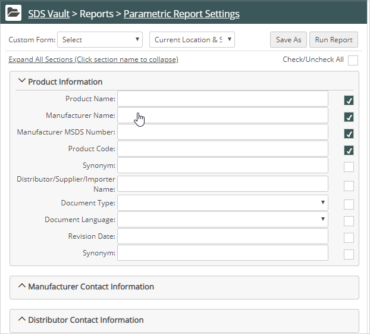
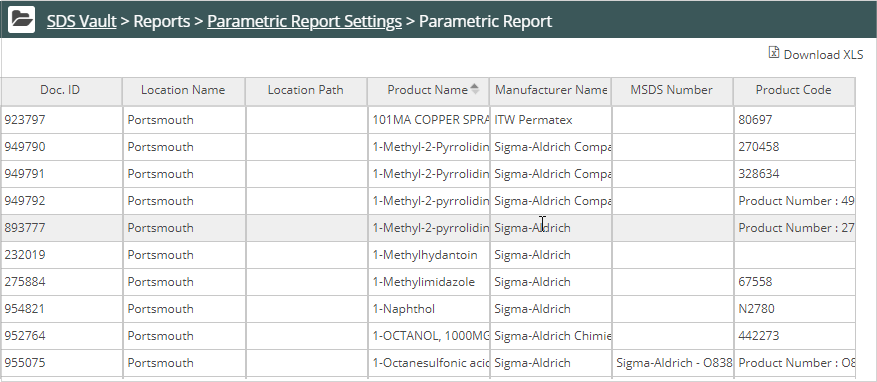

Click Vault Main Menu ( ). The Vault navigation pane displays. Select Parametric from the Reports list.
). The Vault navigation pane displays. Select Parametric from the Reports list.
The Parametric Report setup is displayed.
Check the fields you want displayed in the report and enter filter information.

Expand a section by clicking on the section head to view available fields.
At the top of the page, select the Location to search. You can search Current Location or Current Location and Children.
To save the report as a custom report, click Save As and enter a report name.
Click Run Report.
The report displays. Click Download XLS to download the report in Excel format.
